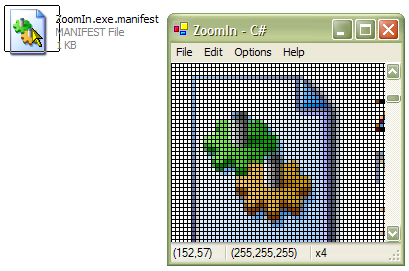

ZoomIn (78K)
ZoomIn (78K)
 23 Dec 2002
23 Dec 2002
First Posted

A .NET Implementation of the ZoomIn Utility
The ZoomIn Utility enables you to look at any area of the screen and capture the display. This can be an excellent way to snip graphics from other applications or to work out the exact details of how other controls are drawn. A copy of this is provided along with Visual Studio as a tool and also as sample MFC source code from Microsoft, so it is instructive to see how much easier this is to do in .NET. As it is easier, this example provides a number of enhancements, such as Saving, Printing, Gridlines and a StatusBar for pixel position and RGB values.
Zoom-In Basics
The idea of ZoomIn is to allow the user to select any area of the desktop and to display it within the ZoomIn window, where it can be zoomed up to 32x its original size. In order to do this you need to be able to create a UI which allows you to select a point on the desktop and one which works out the contents. This part of the application is slightly beyond the .NET framework as it doesn't contain any wrapper for getting at the desktop itself. However, the System.Drawing implementation is based on GDI+ and contains a number of methods which make it easy to interoperate with a handful of Unmanaged GDI methods to perform this.
Drawing A Selection Rectangle
To draw a selection rectangle on the desktop, we take advantage of the fact that if you XOR the same bits with any pattern twice you end up with the same result. For example:
// XOR once:
0x6A ^ 0xF0 = 0x9A
// XOR again:
0x9A ^ 0xF0 = 0x6A
In a bitmap on a display, if the colour you are XORing with is black then the effect of the XOR is similar to inverting the image. This is how almost all drag rectangles are drawn in Win32 applications. Rather unfortunately, the concept of XOR drawing is not present at all in .NET (neither is it present in GDI+ for that matter). In any case, GDI allows us to perform XOR drawing through the BitBlt, StretchBlt and PatBlt methods. In this case I am using PatBlt, which paints a rectangle using the brush currently selected into a device context, combining the brush color with the surface color using a number of raster operations.
So to draw the selection rectangle, all we need to do is to draw the four edges of the rectangle using the XOR operation (which is known as DSTINVERT in the GDI API) and then remember where it was last drawn. To erase the previous rectangle, just draw the exact same image.
Working with the Desktop Device Context
Windows allows you to work with the Desktop through its device context, which is provided as a handle. To get the desktop handle, use the GDI GetDC method, passing in 0 as the window handle to get the DC for. Once you've finished working with a DC returned by the GetDC method you need to release it again using ReleaseDC, otherwise Windows keeps allocating resources until it runs out of memory. These methods are equivalent to the System.DrawingGetHdc and ReleaseHdc methods, except that System.Drawing complains more if you don't perform the operations in pairs, which is probably a good thing.
Once you have a device context, the simplest way to transfer the information to the Managed world is to use the GDI StretchBlt (or BitBlt) methods to copy the data to a hdc obtained from a System.Drawing.Graphics object.
Putting it Together
Once this small amout of Unmanaged code is in place, the other features of the ZoomIn application are trivial to implement. The standard System.Windows.Forms.Form mouse events can be used to scroll the selection window around. System.Drawing features can be used to create copies of the image for pixel interrogation, saving and copying to the clipboard.